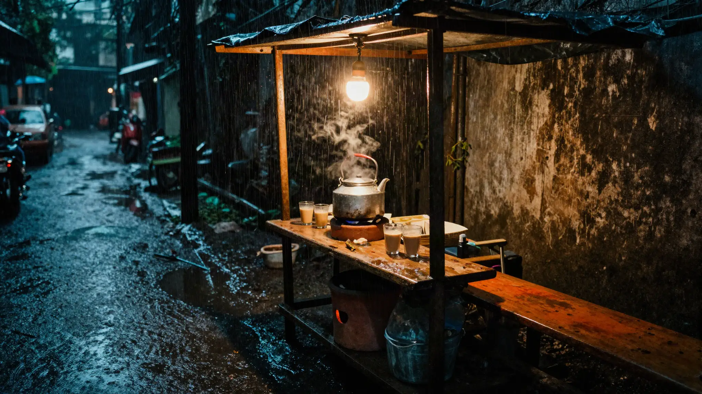
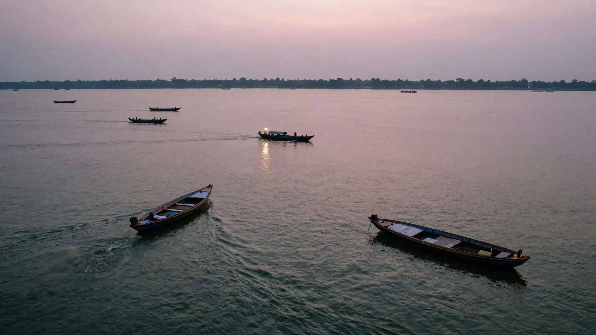
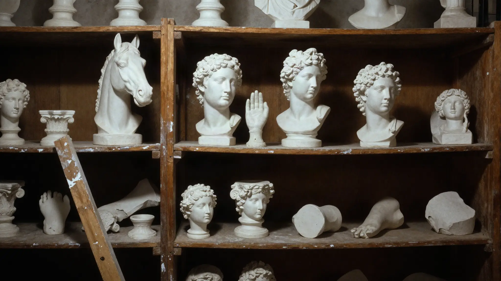
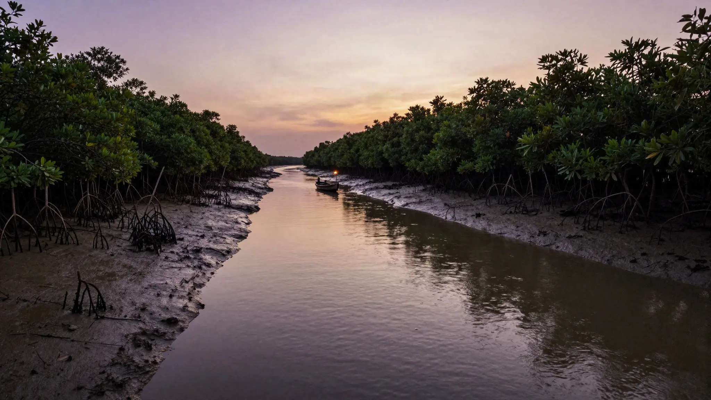
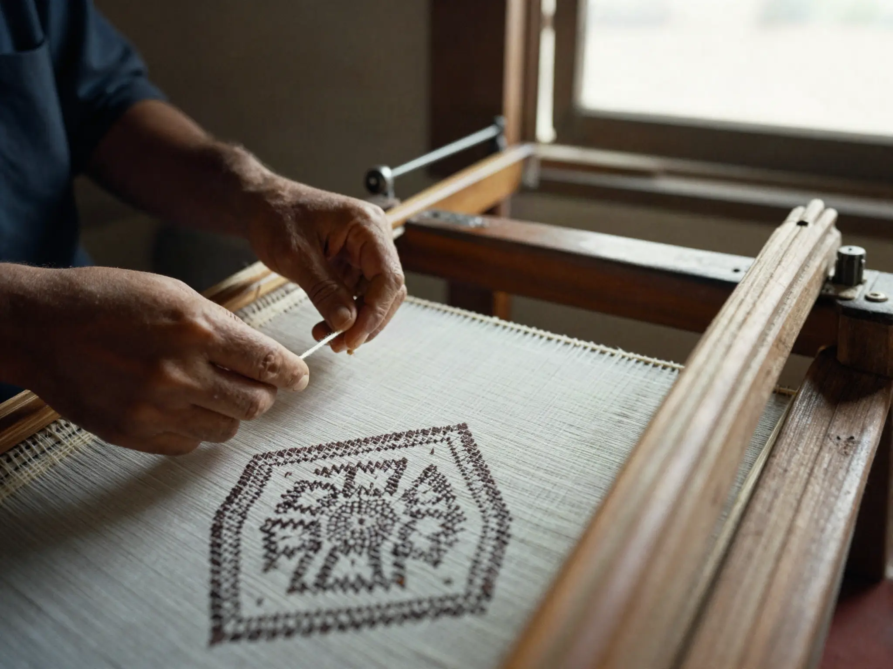
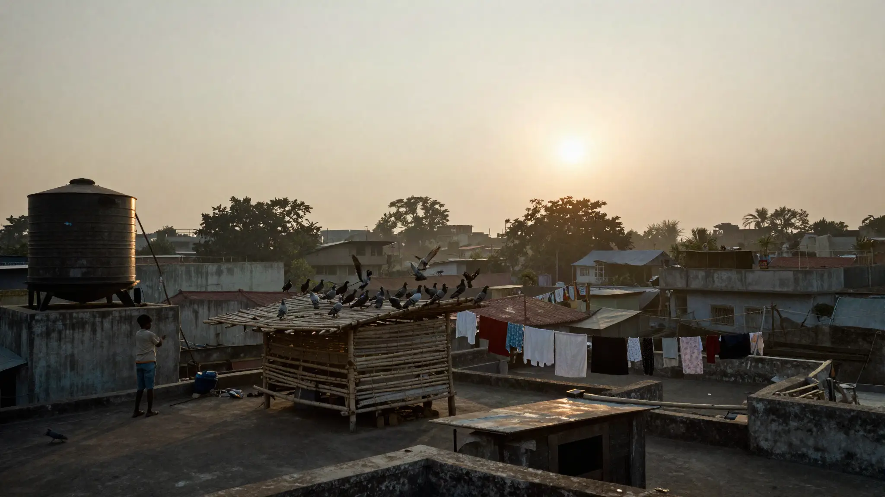
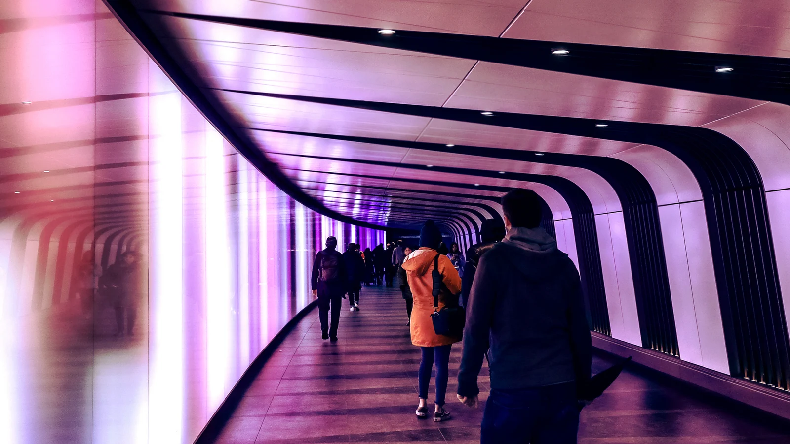
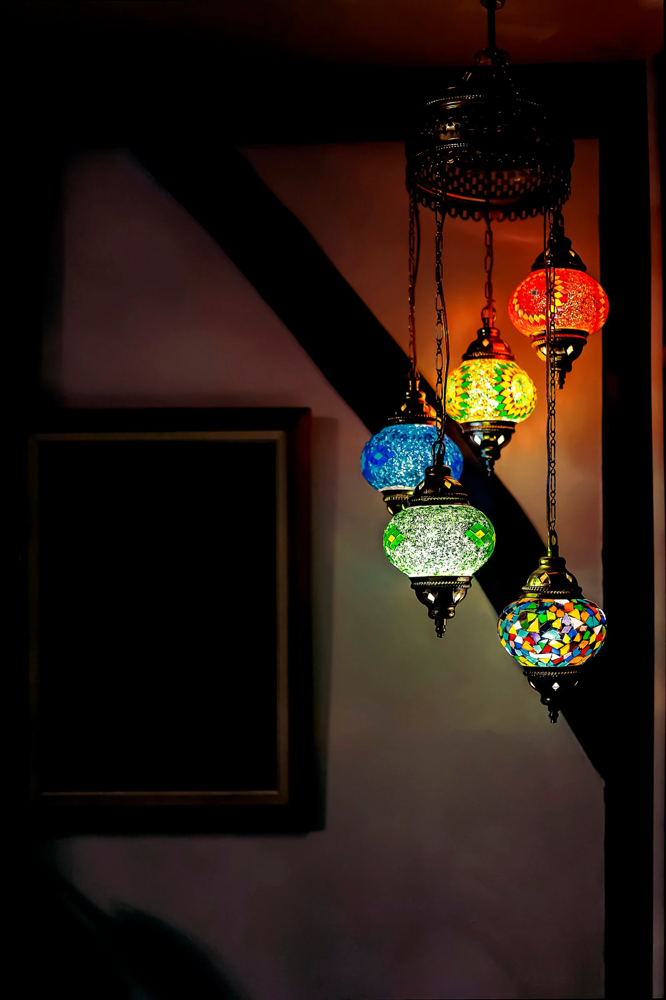

A strategy and design firm, working from both.Dhaka · LondonWe shape the brand. You keep the AI we build.
We makethe workother studioswill notdare
Our team reads it all and can say no.
Branding Known before you speak. Images Pictures people save. Website It answers for you. Videos Watched, then visited. Consultancy, with Akij Dynamics What you sell, read too. AI system You stop repeating yourself.
 Heritage in MotionDhaka dressing Dhaka.
Heritage in MotionDhaka dressing Dhaka.
Brands we built, mark to film.
See both ChhayaYour biggest claim, said small.
ChhayaYour biggest claim, said small.








WebsitesBorsha Tea house · Dhaka. Nouka Electric ferries · Buriganga. Dark Room Gallery · Shoreditch. Badabon Forest lodge · Sundarbans. Eleven Residences · Gulshan Lake. Taant Jamdani weaving · Rupganj. Sonar Goldsmith · Hatton Garden. Haldi Skincare · London. Gate Weave Film house · Dhaka and London.
See the workBerlin Super Return · Event. Highlight Reel 2025 · Showreel. Fluffy Fluffy · Commercial. Oxford Union · Event. Vincent Club · Event. Chocolatarium · Social media. Resolve UK · Event. Jashans Restaurant · Commercial. CQI · Motion graphics. Chocolatarium Re-Opening · Social media. Piano Promo · Music video. Chocolate Making · Commercial. Broken Inside · Music video. Chocolatarium Tours · Commercial. Fairy Ring · Music video. A Lucky Man · Documentary. MDUK · Social media. Li Ame Reel · Social media. On the Edge · Short film. The Old Man · Short film. Perspectum · AI video. Chocolatarium Highlight · Commercial. Diago Dalut · Podcast. Car Content · Social media. Kalakate · Music video. Tottenham Stadium · Podcast.
Watch it
Streets
ProductsRead first. You get, in writing, which parts of your business carry you, which you carry, and where to start. Leave it alone is an answer. An AI system you keep. Every department, one memory.
For people who want to grow. Businesses who care, and want more customers to see it. We won't sell you what already works.
See the workAsif Farid · Sarowar Jahan · Nafia Islam Faria · Muaz Rakin